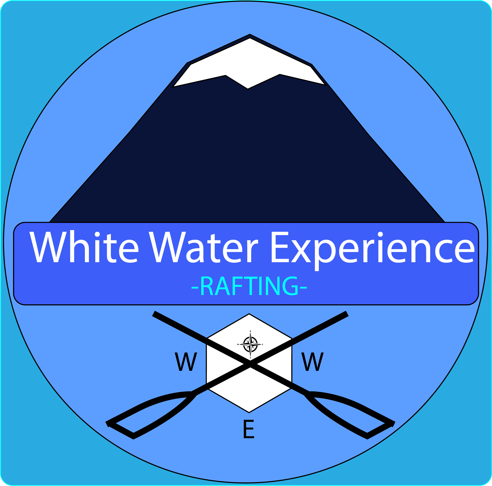

Overview
Purpose
This is primarily a business growing website whose primary purpose is the periodical increase of new clients and how they could extend their interest to purchase the additional services our company has developed since last semester.
Audience
Our target customers are about two types, locals and everyone else from other states or countries. In both cases, for security reasons, their age range has to be greater or equal to 13 years old for the adventure experience packages. For any of the water routes available, there are no age restrictions at all. As a company, we're looking for the opportunity to provide a group experience. So our ideal customer type is families on vacation time or holidays, a group of friends, or foreign tourists. We also consider that everyone interested in adventure or professional water security learning will be another good potential customer. They might have to wait a little longer when they arrive so they could have a group experience that happens to be more engaging and memorable. We have projected our company beyond giving a secure adventure to be a place to learn water security procedures more deeply without any other payments. People automatically will be incorporated into our online community and access to free additional information that we have developed and tested recently. Also, we have projected our content to be user-friendly to all devices but with an emphasis on reaching our clients or future clients through mobile devices, given its popularity and easy access to travelers.
Branding
Website Logo
Style Guide
Color Palette
Palette URL:
https://coolors.co/271f7f-213f8b-e0e0e0-122569-3e5ef9-4791ff-70ffff-ffffff| Primary | Secondary | Accent 1 | Accent 2 |
|---|---|---|---|
| #e0e0e0 | #122569 | #4791ff | #ffffff |
Typography
Heading Font: Odibee Sans
Paragraph Font: Arsenal
Normal paragraph example
The best Whitewater Rafting in Colorado, White Water Rafting Company offers rafting on the Colorado and Roaring Fork Rivers in Glenwood Springs. Since 1974, we have been family owned and operated, rafting the Shoshone section of Glenwood Canyon and beyond.
Colored paragraph example
Trips vary from mild and great for families, to trips exclusively for physically fit and experienced rafters. No matter what type of river adventures you are seeking, White Water Rafting Company can make it happen for you.
Navigation
Site Map
Wireframes
Home